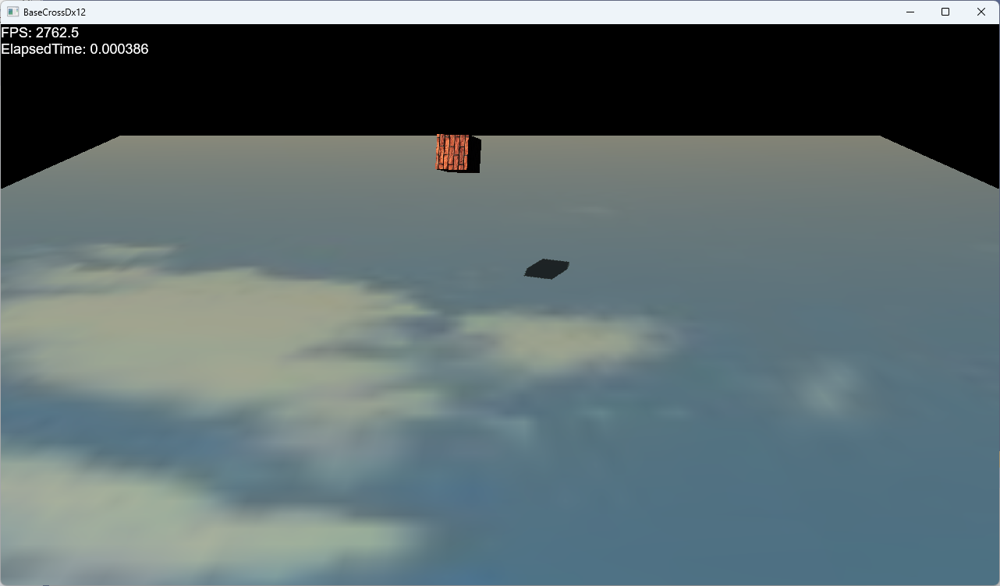

virtual void OnUpdateConstantBuffers()override; virtual void OnCommitConstantBuffers()override; virtual void OnCreate()override; virtual void OnSceneDraw()override;これらは適切なタイミングにオブジェクトから呼び出されます。
virtual void OnUpdateConstantBuffers()override; virtual void OnCommitConstantBuffers()override; virtual void OnCreate()override; virtual void OnShadowDraw()override;これもオブジェクトから呼び出されます。
void WallBox::OnCreate() {
ID3D12GraphicsCommandList* pCommandList = BaseScene::Get()->m_pTgtCommandList;
//メッシュ
m_mesh = BaseMesh::CreateCube(pCommandList, 1.0f);
auto ptrShadow = AddComponent<ShadowmapComp>();
ptrShadow->SetBaseMesh(m_mesh);
//テクスチャ
auto texFile = App::GetRelativeAssetsDir() + L"wall.jpg";
m_texture = BaseTexture::CreateTextureFlomFile(pCommandList, texFile);
auto ptrScene = AddComponent<BcSceneComp>();
ptrScene->SetBaseMesh(m_mesh);
ptrScene->SetBaseTexture(m_texture);
}
赤くなっているところがコンポーネントを追加している記述です。
void WallBox::OnUpdateConstantBuffers() {
auto ptrShadow = GetComponent<ShadowmapComp>();
ptrShadow->OnUpdateConstantBuffers();
auto ptrScene = GetComponent<BcSceneComp>();
ptrScene->OnUpdateConstantBuffers();
}
void WallBox::OnCommitConstantBuffers() {
auto ptrShadow = GetComponent<ShadowmapComp>();
ptrShadow->OnCommitConstantBuffers();
auto ptrScene = GetComponent<BcSceneComp>();
ptrScene->OnCommitConstantBuffers();
}
void WallBox::OnShadowDraw() {
auto ptrShadow = GetComponent<ShadowmapComp>();
ptrShadow->OnShadowDraw();
}
void WallBox::OnSceneDraw() {
auto ptrScene = GetComponent<BcSceneComp>();
ptrScene->OnSceneDraw();
}
このようにコンポーネントとして機能をオブジェクトから分離、カプセルかすることで、各オブジェクトはすっきりとした記述にすることができます。